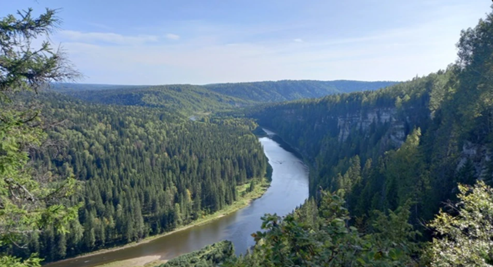

ООПТ Федерального уровня
ООПТ Регионального уровня
ООПТ Местного уровня

| № п/п | категория ООПТ | число ООПТ | общая площадь | % площади от Пермского края |
|---|---|---|---|---|
| 1 | Государственные природные заповедники | 2 | 279268,0 | 1,74 |
| 2 | Государственные природные заказники | 21 | 536170,0 | 3,34 |
| 3 | Памятники природы | 88 | 4571,2 | 0,03 |
| 4/th> | Природные парки | 1 | 125413,0 | 0,78 |
| 5 | Иные категории ООПТ | 107 | 21260,48 | 0,14 |